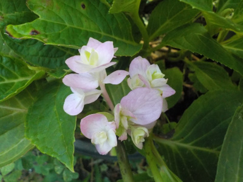
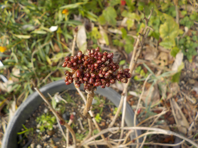
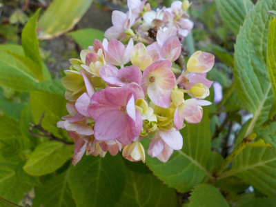
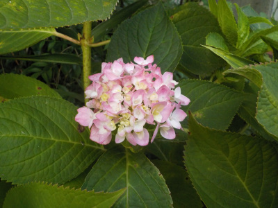
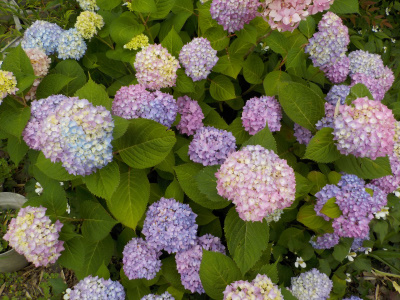
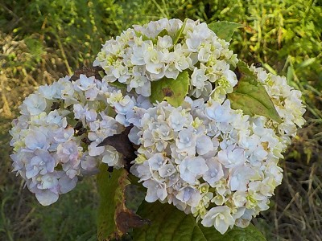
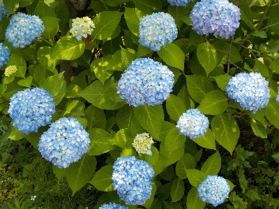
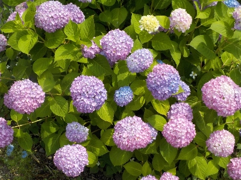
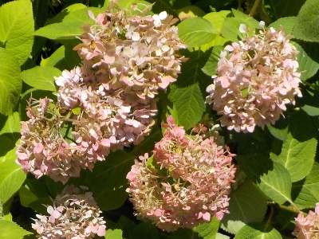

アジサイに小さい花がつきました。
更新日 : 2019/08/25

花が小さすぎて別の花みたい。
品種改良でこんなアジサイがあってもいいですね。でも地味か。
プレゼントの花にならないから駄目ですね。
更新日 : 2019/08/25

花が小さすぎて別の花みたい。
品種改良でこんなアジサイがあってもいいですね。でも地味か。
プレゼントの花にならないから駄目ですね。
更新日 : 2020/03/01

このブツブツは何かな？
花の元かな？冬に蕾が出来たけど咲けなくて、そのまま枯れてしまったのかな？
更新日 : 2020/04/25

去年からあったツブツブが、年越しして花を咲かせました。
葉っぱはみんな落ちたのに、花は落ちずに開花するようです。花は強いです。
更新日 : 2022/08/21

小さくて可愛いアジサイの花が咲きました。
他にも咲いていますが、これが一番形が良かったです。
更新日 : 2023/05/28

霧島の恵が見頃になりました。。
花の大きさは小さいですが、数が多くていいです。
更新日 : 2023/08/27

一つの花の塊ですが、分裂しています。
こういう品種のアジサイがあったら面白くていいですね。
更新日 : 2024/06/01


両方とも同じ木から挿し木で増やしたものです。植えてある場所は10mも離れていないですが、花色が違います。
庭の土って成分が同じじゃないんですね。
更新日 : 2024/07/06

このアジサイは花が終わると赤くなります。更に夏の日差しで焼けてチリチリです。
メラメラと熱そうな感じしていいです。もうちょっと花を楽しみます。
アジサイって色以外にも形も変わるんですね。